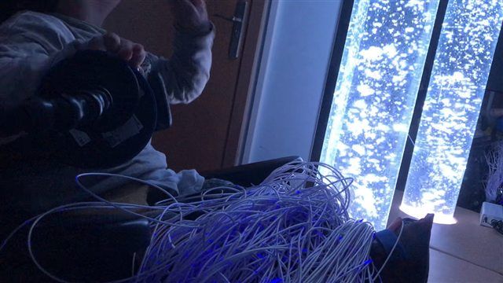
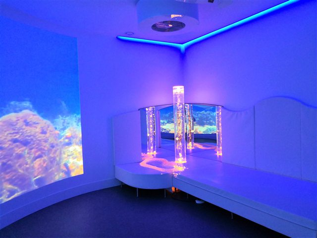
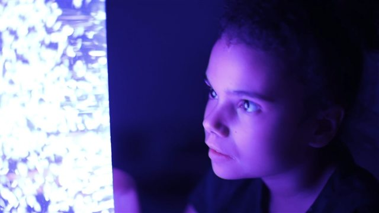
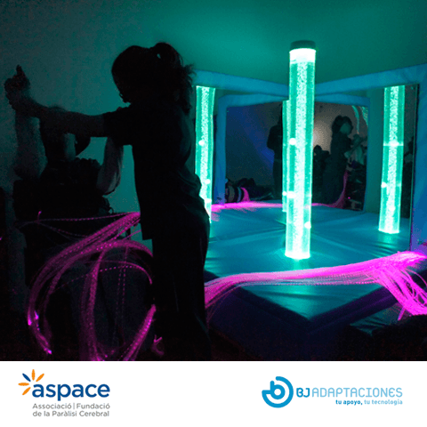

Espacios Multisensoriales
Cuatro propuestas de espacio con su valor cerrado, el detalle de cada elemento que las compone y la forma en que trabajamos un proyecto de principio a fin.
Una colaboración que nos emociona
Para nosotros fue un placer de verdad conocerlos y saber que tenemos una línea de trabajo muy similar, que podemos complementar para beneficio y colaboración mutua. Ustedes recuperan espacios públicos y se los devuelven a la comunidad; nosotros implementamos espacios sensoriales pensados para las personas que los van a usar. En ese cruce es donde queremos trabajar con ustedes, y esta propuesta es una primera muestra de eso.
Junto con elaborar proyectos a la medida, queremos que cuenten con espacios ya definidos y con su valor cerrado, para que presentarlos a una institución o a un privado les sea más simple. Estas son opciones que armamos pensando en nuestra conversación: llegado el momento del proyecto siempre podemos ajustarnos al presupuesto y a las necesidades de la comuna u organización que vaya a beneficiarse.
Como una forma de confirmar nuestro compromiso con esta alianza, hemos realizado una rebaja del 10% en nuestros valores. Por lo tanto, esta propuesta contempla los valores finales, luego de haberse aplicado esa reducción.
Una idea del espacio
que podemos implementar juntos
Sabemos que no todos somos expertos en neurodivergencia ni en los distintos diagnósticos, y que el concepto de sala o espacio sensorial puede ser desconocido.
Por eso queremos presentarles un video, que muestra y les da una idea del tipo de espacio que estamos pensando que podemos implementar en esta colaboración. Los invitamos a ver el siguiente video.
Nos indicaron que cada espacio se implementaría por separado en un contenedor de 20 pies (6,06 × 2,44 × 2,59 m). La distribución de cada sala la definimos en la visita técnica.
Nos hacemos cargo del espacio completo
Nuestro trabajo parte antes de elegir el primer elemento y sigue después de instalarlo.
Evaluamos la necesidad
Hacemos disponibles a nuestros terapeutas para evaluar las necesidades de la comunidad que va a utilizar la sala.
Diseñamos el proyecto
Diseñamos el espacio y el proyecto de sala adecuado a esas necesidades, y presentamos los productos y elementos que responden a la necesidad principal, para que realmente la sala cumpla un objetivo terapéutico. El diseño no tiene costo.
Adecuamos el lugar
Cuando es necesario hacemos los trabajos de preinstalación, para que el espacio físico sea exactamente lo que se necesita para implementar la sala. Como cada lugar llega en una condición distinta, ese trabajo se valoriza aparte y se suma como un ítem adicional en la cotización: lo ejecutamos nosotros, pero no está incluido en el valor de la sala.
Instalamos
Nos encargamos de la instalación y de la implementación del espacio, en todo el país. Tenemos stock propio, así que la entrega no queda esperando una importación.
Capacitamos
Realizamos capacitaciones a todos aquellos que vayan a estar en contacto directo con el uso de la sala y de sus elementos.
Protocolo de cuidado
Presentamos un protocolo de cuidado y mantención, para evitar daños y para que los productos y elementos tengan una vida útil mayor.
No es una idea:
ya está funcionando
Les presentamos tres de nuestros espacios sensoriales, ya implementados en Chile y en uso constante día a día, y una sala de nuestro partner europeo en Lituania. Cada una de ellas es distinta: los invitamos a conocerlas.
Lo que va a estar en contacto con ellos
lo elegimos primero
Nuestras salas están diseñadas para personas neurodivergentes y para personas con distintos diagnósticos, de todas las edades. Ahora bien, un alto porcentaje de quienes usan nuestras salas son niños, y son ellos los que exploran el espacio con las manos, con los pies, con la piel y con la boca: tocan, se apoyan, se abrazan, muerden y succionan todo lo que tienen cerca. Y cada elemento lo usa un niño después de otro. Por eso la materialidad no es para nosotros un dato técnico al final de la ficha: es lo primero que miramos al elegir un producto, y es la razón por la que trabajamos con fabricación europea.
Impermeable a líquidos, incluidas la transpiración, la saliva, la orina y la sangre · Apto para el contacto directo con la piel · Ambas propiedades verificadas en laboratorio europeo.
Espuma de poliuretano con certificación europea en su clase más exigente, la de artículos para bebés · Sin metales pesados ni aditivos contra el fuego restringidos en Europa.
Tratamiento antimicrobiano incorporado al tejido desde su fabricación · Sin las sustancias químicas restringidas en Europa.
Marcado CE de la Unión Europea en seguridad eléctrica y compatibilidad electromagnética.